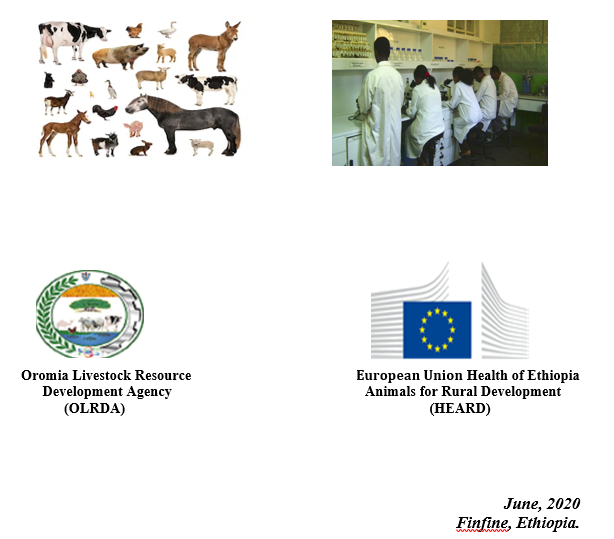

Standard Operating Procedure for Districts Veterinary Laboratory Diagnosis
For Veterinary Clinical Practitioners
(First Edition)

This Standard Operating Procedure is Organized and Edited by the Following Groups:
Prepared by:
- Shubisa Abera (DVM, MSC, Associate Researcher, NAHDIC)
- Kifle Nigusu (DVM, Senior researcher, HRVL)
Edited by:
- Aga Edema (DVM, MVS, Senior Veterinarian, AAU)
- Desalegn Jarso (DVM, MVS, Senior Veterinarian, OLRDA)
- Abdi Fayisa (DVM, MVS, Assistant Professor, AAU)
- Mohammed Aliyi (DVM, Senior Veterinarian, OLRDA)
- Sadiya Haji (DVM, MVS, Senior Veterinarian, OLRDA)
- Jiregna Dugassa (DVM, MVSc, Assistant Professor, AAU)
List of Abbreviation
CMT: Califorina Mastitis Test
CCPP: Contagious Caprine Pleuro Pneumonia
EPG: Eggs Per Gram
LAT: Latex Agglutination Test
PPE: Personal Protective Equipment
PPR: Pest dest Petites Ruminants
RBPT: Rose Bengale Plate Test
SOP: Standard Operating Procedures
SPP: Species
TERMINOLOGY AND DEFINITION
Standard Operating Procedure: is a set of written instructions that describes, in detail, how to perform a laboratory process or experiment safely and effectively.
Antigen antibody reactions: are the methods by which antigens and antibodies are measured.
Antiseptics: are more bacteriostatic in that they prevent bacterial multiplication, but do not kill
the organism.
Disinfectant: is the destruction, inhibition or removal of microbes that may cause disease.
Fixation: is the process by which the internal and external structures of microorganisms and cells are preserved and fixed in position.
Lice: is wingless dorsally flattened external parasite of domestic animals.
Mastitis: is inflammation of mammary gland that can be caused by infectious agents like bacteria, fungus and virus but usually caused by bacteria’s.
Mange: is a collective name for allergic dermatitis.
Mite: is a small size external parasite of animal that difficult to see and identify without the aid of microscope or at least hand lens.
Stains: are salts composed of a positive and a negative ion that one of the ions is colored and is known as the chromophore.
Sterilization: is the complete destruction of all the microorganisms including spores from an object or environment. It is usually achieved by heat (moist/autoclave/or dry oven/) or filtration.
1. INTRODUCTION
The competency of laboratory professionals is obtained through the theoretical knowledge gained in the class session and practical skills and applications that lead to the better understanding and interpretations of the subject matter. This laboratory Standard Operating Procedures is designed to guide the woredas animal health professionals through basic microbiology, serology and parasitology laboratory techniques, procedures and other general safety information. It provides professionals good techniques in practical investigations to ensure and proceed safely and successfully achieve the required treatment and research aims. The main portion of this involves the identification of unknown microbial agents. The SOP can also be used as a reference material and guideline protocol for basic parasitology, bacteriology and serology practices.
Laboratories depend on field personnel to submit samples that will enable them to make a diagnosis. The quality of the samples and the information accompanying the samples greatly facilitate the ability to pick the best test and get results that will be useful for the field diagnostician.
Generally, this laboratory SOP target the woredas that are able to work basic laboratory techniques which start with description about general purpose, scope, its terminology, and principle of parasitological, bacteriological and serological tests and it also includes commonly used rapid tests, for viral diseases identification technique. Each of these techniques are written detail accordingly and the steps in each test includes principles of the test, objectives of the test, materials and reagents used, methods and/or procedures and their possible results and subsequent interpretations.
- OBJECTIVE:
- To standardize the veterinary laboratory diagnosis approaches in veterinary clinics across the Oromiya region, thereby optimizing veterinary service delivery and quality.
- SCOPE:
- This SOP shall be implemented in the veterinary clinics across Oromiya regions to improve laboratory diagnosis procedures. The document addresses all the important steps executed to undertake laboratory diagnosis starting from sample taking to release final result. To improve treatment outcome and quality of veterinary services, private and public veterinary clinics in the Oromia region are recommended to implement procedures described in this SOP.
- GENERAL LABORATORY GUIDE LINE
DO
- Know the potential hazards of the materials used in the laboratory.
- Know the location of safety equipment, emergency showers, eyewashes, fire extinguishers, fire alarms, first aid kits.
- Practice good housekeeping to minimize unsafe work conditions such as obstructed exits and safety equipment, cluttered benches and hoods, and accumulated chemical waste.
- Wear the appropriate personal protective equipment (PPE).
- Shoes must cover the entire foot.
- Contact lenses are not recommended but are permitted. Appropriate safety eyewear is still required for those that use contact lenses. Inform the lab supervisor of the use of contact lenses.
- Wash skin promptly if contacted by any chemical, regardless of corrosivity or toxicity.
- Label all new chemical containers with the “date received” and “date opened.”
- Label and store chemicals properly.
- Restrain and confine long hair and loose clothing.
- All persons should wash their hands after completing laboratory activities and should remove protective clothing before leaving the laboratory.
DON’T
- Eat, drink, chew gum, or apply cosmetics in rooms or laboratories where chemicals are used or stored.
- Store food in laboratory refrigerators, ice chests, cold rooms, or ovens.
- Drink water from laboratory water sources.
- Use laboratory glassware to prepare or consume food.
- Smell chemicals, taste chemicals, or pipette by mouth.
- Work alone in the laboratory
- Avoid chemical work or hazardous activities at night or during off-hours
- Operating procedures
5.1.Microbiology
5.1.1.Bacteriology test
5.1.1.1.Working protocol for California Mastitis Test (CMT)
Purpose:
- To screen out mastitis positive milk sample for further laboratory diagnosis.
Principle:
- A simple cow-side indicator of the somatic cell count of milk. It operates by disrupting the cell membrane of any cells present in the milk sample, allowing the DNA in those cells to react with the testreagent, forming a gel.
Responsibility:
- Laboratory technologists are responsible.
Materials and Reagents:
- Paddle
- Reagent (CMT)
- Milk
- Tape water and dropper
Procedure:
- Take about 1 teaspoon (2 cc) milk from each quarter
- Add an equal amount of CMT solution to each cup in the paddle.
- Rotate the CMT Paddle in a circular motion to thoroughly mix the contents.
- Do not mix more than 10 seconds.
- Read the test quickly. Visible reaction disintegrates after about 20 seconds. The reaction is scored visually. The more gel formation, the higher the score.
Result:
- Positive: Gel formation
- Negative: No gel formation.
Table 1. Interpretation of Test Result of mastitis:
|
Score
|
visible reaction
|
Interpretation
|
|
0
|
None, milk fluid normal
|
Negative
|
|
Trance (T)
|
Slight precipitation
|
Suspicious
|
|
1, (+)
|
Distinct precipitation but no gel formation
|
Weak positive
|
|
2, (++)
|
Mixture thick
|
Distinct positive
|
|
3, (+++)
|
Viscosity greatly increased strong gel that is cohesive with a convex surface
|
Strong positive
|
N.B. If the screening test is conducted on the field, test positive milk samples are transported to the laboratory under cold chain in an ice box and stored at 40c in the refrigerator until it will be cultured. The laboratory examination should be carried out within one to two days as soon as possible.
5.1.1.2.Working protocol for Anthrax disease
5.1.1.2.1.Giemsa stain
Purpose:
- To obtain differential white blood cell counts. It is also used to differentiate nuclear and cytoplasmic morphology of the various blood cells like platelets, RBCs, WBCs. This stainis also used in cytogenetics to stainthe chromosomes and identify chromosomal aberrations.
Principle:
- Giemsa stain is a differential stain and contains a mixture of azure, methylene blue, and Eosin dye. It is specific for the phosphate groups of DNA and attaches itself to where there are high amounts of adenine- thymine bonding. Azure and eosin are acidic dye which variably stains the basic components of the cells like the cytoplasm, granules etc. Methylene blue acts as the basic dye, which stains the acidic components, especially the nucleus of the cell. Methanol act as a fixative as well as the cellular stain. The fixative does not allow any further change in the cells and makes them adhere to the glass slide.
Responsibility:
- Laboratory technologists are responsible.
Materials:
- Methanol
- Giemsa
- Staining plate
- Phosphate buffer
- Microscope slide
- Microscope
Procedure:
- Make a thin smear
- Fix smear in methanol for 2 minutes
- Stain in 10% giemsa in for 30 minutes in a coplin jar or upside down on a staining plate.
- Wash off stain with a stream of phosphate buffer PH 7.2
- Flood with buffer and leave until differentiation is complete(1-2min)
- Dry by blotting with filter paper or staining up right on the bench
- Specimen packed in leak proof containers and transported in ice box
Result:
- From dead animals staining occur single, two or three in one chain, sides are straight and ends (edges) are surrounding, no spore (vegetative)
- From the growth in the laboratory media staining occur
- Very long chain, the edges are straight, spore present and capsule absent
- In the body of dead animals, in C02 tension produce capsule.
- In environment (laboratory) exposed to 02 and produce spore.
5.1.1.2.2. Methylene Blue (Polychrome) Staining
Purpose:
- For determining bacterial morphology
Principle:
- An alkaline solution of methylene blue undergoes progressive oxidative demethylation with aging to produce a mixture of methylene blue, azures, and methylene violet
Responsibility:
- Laboratory technologists are responsible.
Materials:
- Microscopic slide
- Absolute alcohol
- Polychrome methylene blue stain
- Light microscope
- Immersion oil
Procedure:
- Thin blood smear
- Air dry and fix by dipping the slide in absolute alcohol for 30-60 seconds
- Fix a smear by heating
- Stain with methylene blue for 30 minutes
- Wash rapidly in tap water
- Blot to dry
- Examine under oil immersion
Result:
- Irregular pink capsular material surrounding the blue stained bacilli is indicative of anthrax organism.
5.1.1.3. Working protocol for Pasteurellosis (Giemsa stain)
Purpose
- To obtain differential white blood cell counts. It is also used to differentiate nuclear and cytoplasmic morphology of the various blood cells like platelets, RBCs, WBCs. This stainis also used in cytogenetics to stainthe chromosomes and identify chromosomal aberrations.
Principle:
- Giemsa stain is a differential stain and contains a mixture of azure, methylene blue, and Eosin dye. It is specific for the phosphate groups of DNA and attaches itself to where there are high amounts of adenine-thymine bonding. Azure and eosin are acidic dye which variably stains the basic components of the cells like the cytoplasm, granules etc. Methylene blue acts as the basic dye, which stains the acidic components, especially the nucleus of the cell. Methanol act as a fixative as well as the cellular stain. The fixative does not allow any further change in the cells and makes them adhere to the glass slide.
Responsibility:
- Laboratory technologists are responsible.
Materials:
- Methanol
- Giemsa
- Staining plate
- Phosphate buffer
- Microscope slide
- Microscope
Procedure:
- Make a thin smear
- Fix smear in methanol for 2 minutes
- Stain in 10% giemsa in for 30 minutes in a coplin jar or upside down on a staining plate.
- Wash off stain with a stream of phosphate buffer PH 7.2
- Flood with buffer and leave until differentiation is complete(1-2min)
- Dry by blotting with filter paper or staining up right on the bench
- Specimen packed in leak proof containers and transported in ice box
Result:
- Distinct by polar shape seen.
5.1.1.4. Streptothricosis/Dermatophilosis (Giemsa stain)
Purpose:
- To obtain differential white blood cell counts. It is also used to differentiate nuclear and cytoplasmic morphology of the various blood cells like platelets, RBCs, WBCs. This stainis also used in cytogenetics to stainthe chromosomes and identify chromosomal aberrations.
Principle:
- Giemsa stain is a differential stain and contains a mixture of azure, methylene blue, and Eosin dye. It is specific for the phosphate groups of DNA and attaches itself to where there are high amounts of adenine- thymine bonding. Azure and eosin are acidic dye which variably stains the basic components of the cells like the cytoplasm, granules etc. Methylene blue acts as the basic dye, which stains the acidic components, especially the nucleus of the cell. Methanol act as a fixative as well as the cellular stain. The fixative does not allow any further change in the cells and makes them adhere to the glass slide.
Responsibility:
- Laboratory technologists are responsible.
Materials:
- Methanol
- Giemsa
- Staining plate
- Phosphate buffer
- Microscope slide
- Microscope
Procedure:
- Make a thin smear
- Fix smear in methanol for 2 minutes
- Stain in 10% giemsa in for 30 minutes in a coupling jar or upside down on a staining plate.
- Wash off stain with a stream of phosphate buffer PH 7.2
- Flood with buffer and leave until differentiation is complete(1-2min)
- Dry by blotting with filter paper or staining up right on the bench
- Specimen packed in leak proof containers and transported in ice box
Result:
- Smears from the undersurface of scabs or from softened scab material reveal the characteristic branching filaments containing zoospores.
- Smears from colonies reveal solidly staining filaments.
5.1.2. Serological test
5.1.2.1. Working protocol for Brucellosis (Rose Bengal Plate Test (RBPT))
Purpose:
- To detect the presence of specific antibodies in sera against a known.
Principle:
- A specific antibody reacts with the antigen and forms a precipitation or agglutination.
Responsibility:
- Laboratory technologists are responsible.
Materials and equipment:
- Serum dispenser 30 ul.
- Antigen dispenser 30 ul.
- Plates of white enamel or microscopic slides
- Applicator sticks.
- Rose-Bengal stained antigen.
- Positive and negative control sera.
Procedure:
Remove the antigen, control and test sera from the refrigerator ½ - 1 hour before testing, since active materials straight from the refrigerator react poorly.
- Place one drop (30 ul) of antigen on each square of the plate/microscopic slide.
- Place one drop (30ul) of the serum alongside (but not into) the antigen.
- With the applicator stick, mix the antigen and serum thoroughly.
- When all sera have been mixed, shake gently or place the plate/slide on the rocking machine, and rock for 4 minutes, or rock manually.
- After exactly 4 minutes look in a good light for agglutination. This is often easier if the mixture is scrutinized on flowing away from the operator. Agglutination often takes place in about 0-4 minutes, depending on the serum.
N.B. In case of small ruminates the proportion of antibody and antigen was not equal as bovine so, three volumes of serum and one volume of antigen were used (e.g.75 μl and 25 μl, respectivel
Result:
- 0” as negative (No agglutination), “+” (Barely perceptible agglutination), “++” (Fine agglutination and some clearing) and “+++” (Course clumping, definite with clearing).
5.1.2.2. Working protocol for Pest Des Petits Ruminates Virus (PPRV) (PESTE-TEST)
Purpose:
- To detect the presence of specific antibodies in sera against a known antigen.
Principle:
- To detect Antigen and antibody reaction.
Responsibility:
- Laboratory technologists are responsible.
Materials:
- Lateral flow devices
- Swabs
- Sample tube
- Pastettes
- Buffer solution
- Compressive operating instructions
Procedure:
- Ensure the buffer and test device (LFD) are at ambient temperature before beginning the test. Take one of the sample tubes provide and add 30 drops of the provide buffer from the dropper bottle.
- Using one of the included swabs, swab the inside of the lower eyelid or the inside of the nose of the suspect infected animal. Eye swabs are generally preferred to nasal swabs as they contain less mucus but either will work.
- Place the cotton bud end of the swab into the buffer in the sample tube and agitate it in the buffer for 5-10 seconds.
- Remove the swab from the sample tube and discard.
- Unwrap one test device (LFD) and lay it on a flat surface out of direct sunlight. Using one of the included pastetes, transfer 4 drops (approxmatly100µl) from the sample tube to the sample application well on the test device. Do not overload the device with excess samples as this may affect the result.
- Leaving the test device flat, allow the test to develop for up to 20 minute (if the test is clearly positive before 20 minute, further incubation is not required). A band appearing at the T (test) position is a positive.
- Leaving the test device flat, allow the test to develop for up to 20 minutes (if the test is clearly positive before 20 minutes, further incubation is not required). A band appearing at the T (Test) position is a positive result.
- If the C (control) band does not appear then the test has failed. This may be because the test device was faulty or the sample contained particulate material that blocked the flow of buffer or the sample was not applied correctly to the sample application well on the device. Repeat the test with a fresh device and where possible afresh sample.
Interpretation result:
- Negative: The strike only on the C (control) band
- Weak positive: The line slightly on the test band.
- Strong Positive: The line strong on test band.
5.1.2.3. Working protocol for Contagious Caprine Pleuro Pneumonia (Latex Agglutination Test
Purpose:
- To detect the presence of specific antibodies in sera against a known.
Principle:
- A specific antibody reacts with the antigen and forms a precipitation or agglutination.
Responsibility:
- Laboratory technologists are responsible.
Materials and equipment:
- Serum dispenser 30 ul.
- Antigen dispenser 30 ul.
- Plates of white enamel or microscopic slides.
- Applicator sticks.
- Rose-Bengal stained antigen.
- Positive and negative control sera.
Procedure:
Remove the antigen, control and test sera from the refrigerator ½ - 1 hour before testing, since active materials straight from the refrigerator react poorly.
- Place one drop (30 ul) of antigen on each square of the plate/microscopic slide.
- Place one drop (30ul) of the serum alongside (but not into) the antigen.
- With the applicator stick, mix the antigen and serum thoroughly.
- When all sera have been mixed, shake gently or place the plate/slide on the rocking machine, and rock for 4 minutes, or rock manually.
- After exactly 4 minutes look in a good light for agglutination. This is often easier if the mixture is scrutinized on flowing away from the operator. Agglutination often takes place in about 0-4 minutes, depending on the serum.
Interpretation of results:
Results should be assessed within three minutes.
- Positive (+++): strong clumping of latex beads. Agglutination should begin with one minute.
- Positive (++): clear agglutination of the latex beads. Agglutination should begin between one and two minutes.
- Positive (+): fine agglutination of the latex beads between two and three minutes.
- Negative (-): no agglutination within three minutes.
5.1.2.4. Working Protocol for Avian Salmonellosis
Purpose:
- To detect the presence of specific antibodies in sera against a known pathogen
Principle:
- A specific antibody reacts with the antigen and forms a precipitation or agglutination.
Responsibility:
- Laboratory technologists are responsible.
Materials, equipment and reagent
- Salmonella Pullorum Gallinarum (Biovac) (ref: AS1)
- Salmonella Enteritidis (Biovac) (ref: AS2)
- Salmonella Pullorum (Soleil) (ref: SL242)
- Specific pathogen-free (SPF) chicken serum (ref: AS7)
- Positive SalmonellaPullorum serum ref: AS5)
Procedure:
- Use a clean white tile marked into squares of about 3 × 3 cm. If a tile with 3 × 4 squares is used, up to 12 blood samples can be tested at the same time.
- Place 1 drop (about 0.02 ml) of crystal-violet-stained antigen in the centre of each square.
- Obtain a sample of fresh whole blood. This is conveniently done by making a stab of a wing vein using a needle with a triangular point.
- Place an equal size drop of fresh whole blood next to a drop of antigen.
- Mix the drops of antigen and blood using a fine glass rod, which is wiped clean between samples.
- Use a gentle rocking motion to keep the drops agitated for up to 2 minutes. Several tests may be carried out simultaneously on the same tile, but the drops should not be allowed to dry out during this time. In very warm conditions, a smaller number of larger drops per plate may be required to avoid drying out.
- A positive reaction is indicated by easily visible clumping of the antigen within 2 minutes.
- A negative reaction is indicated by absence of clumping of the antigen within 2 minutes.
- Include known positive and negative control sera on each testing occasion, using them in the same way as the blood.
- On completion of a set of tests, the tile is washed and dried, ready for further use.
Result interpretation:
- In the absence of positive reactions, any inconclusive reactions can only be interpreted in the light of the previous Salmonella testing history of the flock. Where there are positive reactors, any doubtful reactor should be regarded as positive. Recently infected birds may not show a typical positive reaction until they are retested after 3–4 weeks.
5.2.Parasitology Techniques
5.2.1. Helminthology
5.2.1.1.Gross examination of feces
Procedure:
- Examine feces before mixing with formalin
- Gross parasite: Spontaneously discharge tape worms and nematodes can be recognized by direct microscope inspection of the faeces, or naked eye. Probably the most common are proglottids of tape worms, entire round worm or even larval arthropods. Their morphology, shape, size and movement may aid identification.
- Consistency: The condition of faeces; that is weather the faeces are soft, watery (diarrhea) very hard or constipation should be noted.
- Color: Light gray color faeces-indicates excusive fat in the faeces is a sign of poor intestinal absorption. Unusual fecal colors should always be reported.
- Blood: May indicate sever parasitism as well as other intestinal diseases
- Mucus: May be associated with intestinal parasitism or some metabolic disease
- Age of the faeces: If the faeces appear old and dry this should be noted. An aged sample, parasitic egg may be embryonated or larvated, Oocyst may have sporulated and pseudo parasite may be present.
5.2.1.2. Direct microscope examination/Faecal Smear
Purpose:
- To demonstrate the presence of helminths and identify species or helminth group present.
- To detect motile parasites stage helminth larvae frequently passed in the semi-formed and loose to fluid feces of animals
Principles:
- Helminth eggs and larvae can be identified in a thin smear of faeces on a microscope slide
Responsibility:
- Laboratory technologies are responsible.
Materials and Equipment:
- Microscope slides,
- Cover slip,
- Saline solution (0.85%) or water
Procedures:
- Smear small quantity of faeces on a clean microscopic slide.
- Mix with a few drops of water.
- Place a cover slip over the smear
- Scan the faecal smear under the coverslip by starting at one corner and then moving the slide to the opposite corner.
- Move back overlapping the field and continue until the smear under the coverslip has been examined.
Interpretation:
- It only shows the presence of helminths eggs or larvae and enables the identification of species or groups present.
- It can be difficult to observe or identify the eggs as they may be partly or completely covered by debris.
5.2.1.3. Qualitative Examination
5.2.1.3.1. Flotation
Purpose:
- The simple test tube flotation technique is qualitative test for the detection of nematode and cestode eggs.
- This is a useful method to use in preliminary surveys to establish which parasite groups are present.
Principle:
- Eggs are separated from faecal material and concentrated by a flotation fluid of an appropriate specific gravity and the parasite eggs are less dense than the fluid flotation medium.
Responsibility:
- Laboratory technologists are responsible.
Equipment’s required:
- Two beakers or plastic containers
- Tea strainer or double layer cheesecloth
- Measuring cylinder or container graded by volume
- Fork, tongue blades or stirring rod
- Test tube
- Test tube rack
- Microscope
- Microscope slides and cover slips
- Balance or teaspoon
Procedures:
- Weight or measure using a pre-calibrated teaspoon approximately 3g of faeces and put into container.
- Pour 50 ml flotation fluid into container.
- Stir or mix faeces and flotation fluid thoroughly with a tongue blade or fork.
- Pour faecal suspension through a tea strainer or double layer of cheesecloth into container2
- Pour the faecal suspension into test tube supported in a stand or rack from container 2
- The test tube is gently topped off with the suspension leaving a convex meniscus at the top of the tube.
- Carefully place a cover slip on top of the test tube
- Leave the test tube to stand for 20 minutes
- Carefully lift the coverslip off the test tube together with the drop of fluid adhering to it.
- Place the coverslip on a clean slide
- Examine using a compound microscope at 10 x 10 magnification
Table 2: Class of flotation solution and parasite found
|
Flotation solution
|
Solute
|
Solvent
|
Specific
gravity
|
Parasites
|
|
Saturated salt
|
305g NaCl
|
1000ml tap
water
|
1.18-1.2
|
Trichostrongyloidea, Strongyloidea
|
|
Magnesium sulfate
|
450g MgSO4
|
1000ml tap water
|
1.2
|
Metastrongylus
|
|
Sheath solution
|
454g table sugar
|
355 tap water
|
1.27
|
Tania species, Trichuris, Toxocara
|
|
Zinc sulfate
|
331g Zinc sulfate
|
1000ml tap
water
|
1.18-1.2
|
Giardia, Ostertagia schist soma, trematode
|
|
Zinc chloride
|
336 g Zinc
Chloride
|
1000ml tap
water
|
1.3
|
Cestode and nematode, Oocyst of
protozoa
|
|
Sodium nitrate
|
338g Sodium
nitrate
|
1000ml tap
water
|
1.18-1.2
|
Spirocercosis
|
Source: (Dryden et al., 2005).
5.2.1.3.2. Sedimentation:
Purpose:
- The sedimentation technique is a qualitative method for detecting trematode eggs in faeces.
Principles:
- The majority of trematode eggs are too large and heavy to float reliably in the flotation fluids normally used for nematode eggs. They do however sink rapidly to the bottom of a faecal/water suspension and this is the basis of the faecal sedimentation technique.
Responsibility:
- Laboratory technologists are responsible.
Equipment’s:
- Two beakers or plastic containers
- Tea strainer or double layer of cheesecloth
- Measuring cylinder
- Fork, tongue blades, or stirring rod
- Test tubes
- Test tube rack
- Methylene blue 1% solution or Malachite grees 1% solution
- Microscope slides and coverslips
- Pipettes
- Balance or calibrated teaspoon microscope
Procedures
- Weight or measure approximately 3 gm of faeces into container 1
- Por 40-50 ml of tap water into container 2
- Mix faeces and water thoroughly
- Filter the suspension through a tea strainer or double-layer of cheese cloth into container2
- Pour the filtered material into a test tube
- Allow to sediment for 5 minutes
- Remove the supernatant with a pipette very carefully
- Re-suspend the sediment in5 ml of water
- Allow to sediment for 5 minutes
- Discard the supernatant carefully
- Stain the sediment by adding one drop of methylene blue or malachite green
- The dyes stain the faecal particles a deep blue or green leaving the trematode eggs unstained.
- Transfer a small drop of the stained sediment to a microscope slide using a pipette
- Cover droplet with a cover slip.
- Examine under a microscope at 10 x 10 magnifications
- Identify eggs
- Repeat until all the sediment has been examined
- Alternatively, pour the whole amount into a petri dish and examine methodically under a stereo-microscope
N.B. Nematod eggs may be present in the faecal sample but the recovery with this technique is very low. Nematode eggs should be examined using flotation or the MacMaster technique.
5.2.1.4. Quantitative techniques
5.2.1.4.1. Quantitative Simple Test Tube Flotation
Purpose:
- The quantitative test tube flotation technique is a test tube for the counting of eggs where the concentrations are too small for detection by the McMaster technique.
- Test tube has sensitivity of 0.3 p.g (eggs per gram faeces)
Principle:
- Eggs are separated from faecal material and concentrated by a flotation fluid of an appropriate specific gravity.
Responsibility:
- The laboratory technologist are responsible
Equipment’s:
- Saturated sugar solution if egg culturing is required later
- Test tube rack
- Pipettes
- 2 22 x 22 mm coverslips
- Microscope slides
- Glass stirring rod
- Centrifuge
- Microscope
- Tea strainer
- Pestle and mortar
- 42 ml water
- 15 ml conical centrifuge tubes
- Flotation fluid (saturated NACl solution/Strongle eggs/ saturated ZnSO4 solution/Fasciola eggs/ saturated MgSO4 solution/Metastrongylus/ Trichuris, Capillaria, Ascaris eggs)
Procedure:
- Weight 3 gm of faeces and put into a tea strainer
Note:
- Faeces must be fresh and stored in a cool box for transportation to the laboratory.
- The samples must then be transferred to a refrigerator and stored between +4 oC and +8o Faeces should be examined within 2 weeks from day of collection
- Place the tea strainer on the mortar pour 42 ml of water over the faeces.
- Using pestle grind the faecal material in the tea strainer until it is broken down.
- Remove the tea strainer and discard any faecal material which is still retained in it
- Stir the faecal suspension in the mortar and pour into four 15 ml conical centrifuge tubes
- The tubes should be filled to within approximately 10 ml of the top
- Centrifuge at 1500 r.p.m. for 2 minutes
- Add 0.5 ml saturated NaCl to each tube and resuspend sediment
- Fill the saturated NaCl to within 10 mm of top of tube
N.B. Use a flotation fluid of saturated NaCl for strongly eggs; ZnSO4 for Fasciola eggs; MgSO4 for Metastrongylus/Trichuris/ Capillaria/Ascaris eggs
- Place your thumb over the end of each of the conical centrifuge tubes in turn and invert them 5-6 times thoroughly mixing the suspension. Do this gently to minimize the formation of air bubbles.
- Stand the tubes in a test tube rack and add saturated NaCl solution or other solution of choice with a pipette to form a positive meniscus.
- Place a no. 2, 22 x 22 mm cover slip on top of each tube and leave to stand for 2 hours.
- Remove the cover slip with a deliberate vertical movement. A drop of liquid will adhere to the underside of the cover slip. Place the cover slip on a microscope slide, so that the liquid is sandwiched between the two layers of glass. Repeat for each of the four of the tubes.
- Examine under a microscope at low power i.e. 10 x4 or 10 x 10.
- Identify, count and record the total number of eggs that are seen on the four slides.
- Number of eggs per gram of faeces = Number of eggs counted
Weight of faeces in gram
Interpretation:
- EPG result should be considered that, if more than 1000 EPG is heavy infection, if more than 500 EPG is moderate infection and if less than 500 EPG is low infection
5.2.1.4.2. McMaster egg counting technique
Purpose:
- Used for demonstrating and counting helminths eggs in faecal samples.
- To determine the number of eggs, present per gram of faeces (e.p.g).
Principle:
- To determine the number of eggs, present per gram of feces /EPG/.
Materials:
- Two beakers or plastic containers
- Balance
- Tea strainer, cheese cloth or dental napkin
- Measuring cylinder stirring device (fork, spatula, tongue, depressor)
- McMaster egg counting chamber
- Compound microscope
- Pasteur pipettes and rubber teats
- Flotation fluid (choice of solution depends on species expected to be present and availability of reagent).
Procedure
- Weight 4 gm of faeces and place into a container 1
- Add 56 ml of your chosen flotation fluid
- Mix (stir) the contents of the beaker thoroughly with a fork, tongue depressor or spatula
- Filter the faecal suspension through a tea stariner or double layer of cheese cloth or dental napkin into second container 2
- Stir the filtrate in container two with a pasteur pipette
- Using the pipette withdraw a sub-sample as the filtrate is being stirred
- Stir fluid and fill first compartment of the McMaster counting chamber with the sub sample
- Stir fluid again and fill second chamber with another sub sample
- Fill both sides of the McMaster counting chamber with the sub-sample
- Allow counting the chamber to stand for 5 minutes
- It is important to leave the chamber to stand to allow the eggs to float to the surface and the debris to go to the bottom of the chamber
- Examine the subsample of the filtrate under the compound microscope at 10 x 10 magnifications.
- Identify and count all eggs within the engraved area of both chamber
Note!! Don’t use high power i.e. x 20/ x / 40 / x / HI 100 oil because the objective will break the thick upper plate of the McMaster slide.
Note!! The sample shall be fresh.
Interpretation:
- Count the number of eggs within grid of each chamber, ignore those outside the squares
- Multiply the total by 50 this gives the eggs per gram of faeces (e.p.g).
5.2.1.4.3. Larval culture technique
Purpose:
- To identify the third stage of strongyle nematodes present in feaces which are recoverd using the Barman technique
- Many nematode eggs are alike and species such as Haemonchus, Mecistocirrus, Ostertagia. Trichstrongylus, cooperia, Bunostomum, and Oesophagostomum cannot be clearly, differentiated from the eggs in faecal samples. They provide a suitable environment for the hatching and development of helminthes eggs into the infective stages (L3).
Principle:
- To provide suitable condition for the hatching of eggs and larval development of the infective third stage(L3).
- The third stage larvae can be recovered by the Baermann technique and identified to genus level.
Responsibility:
- Laboratory technologists are responsible.
Materials:
- Water
- Jars, container
- Fork, spoon tongue depressor, spatula
- Charcoal (dried, sterile bovine faeces may be used if charcoal is not available. To use bovine faeces heat to 70 o This sterilizes the faeces and remove any helminths eggs
- Incubate (if available)
Procedure:
- Break up faeces in a container a spatula or other stirring device. Faeces should be moist and crumbly.
- If the faeces are too dry add water until correct consistency is obtained
- If faeces are too wet, add charcoal or sterile bovine faeces until correct consistency is obtained.
- Transfer the mixture to jars or containers
- Leave the culture at room temperature for 14-21 days when larvae should have reached infective stage
- Add water to culture regularly if mixture is getting too dry, approximately every 1-2 days
- If an incubator is available, the culture can be placed at 27 oc and left for 7-10 days
- Add water to culture regularly if mixture is getting too dry, approximately every 1-2 days
- Larvae are recovered by Baermann technique
5.2.1.4.4. Baermann Technique
Purpose:
- To separate larvae from faecal material, lung worm infection and identification of third stage(L3) from faecal culture
Principle
- The Baermann technique is based on the active migrations or movement of larvae
- Faeces are suspended in water
- The larvae move into the water
- They sink to the bottom and can be collected for identification
Responsibility:
- The laboratory technologists are responsible.
Materials
- Test tube
- Microscope
- Strainer
- Thin stick or metal rod
- Cheesecloth or dental napkin
- Clamp or spring clip
- Rubber or plastic tubing
- Funnel stand
- Funnel
- Pasteur pipette
- Small petri dish
- Scissors
- Disposal paper towels
- Spoon or spatula
- Rubber band or length of string
- Jug or flask
- Microscope slid and coverslip
- Iodine
Procedures:
- Take a funnel and fit a short piece of tubing to the stem
- Close the tubing with a clamp or spring clip
- Support the funnel on a single stand
- If more than one sample required processing at the same time use a plank in which holes have been made to support several funnels.
- Place a double layer of cheesecloth or dental napkin on a disposal paper towel or equivalent on the bench
- Using spoon or spatula weight or measure approximately 5-10 grams of faecal materials
- Place the faecal materials in the center of the cheesecloth
- From a pouch containing the faecal material by holding the four corners of the cheesecloth together and moulding the cloth around the faecal material
- Using a rubber band or length of string close the cheesecloth pouch
- Push the stick or short metal rod under the rubber band or string so that the pouch can be suspended.
- Place the pouch containing the faecal material in the funnel
- Trim off the excess cheesecloth
- Fill the funnel with lukewarm water
- Make sure the faecal material is covered
- Leave the apparatus to stand for 24 hours
- Draw off a few milliliters of fluid from the stem of the funnel into a test tube Then either:
- Leave to sediment for at least 30 minutes
- Or if a centrifuge is available, the fluid can be drawn into a centrifuge tube and spun at 100 rpm for 2 minutes
- Check sedimented sample in a petri dish for the presence of larvae
- This may be all that is required to diagnose the presence of nematode parasites but often more detailed examination is required
- This is because other parasitic or free-living nematode life-cycle stage may be present if the stage sample was not fresh when processed or if it was collected from the ground
- Use a Pasteur pipette to transfer a small droplet of the sedimented fluid from the Petri-dish to a microscope slide
- Add drop of iodine to fix the larvae and gently pace a coverslip over the drop
- Any free-living nematodes will stain dark brown very quickly while the larvae of parasitic species will only stain very slowly as the larvae sheath protects the body
Interpretation:
- Morphological identification of L3 of most parasitic nematode is based on examination of the caudal and cranial extremities, although other features such as the length or shape of esophagus or cranial tip and length of sheath tail extension.
Table 3. Classification of helminth parasites of domestic animals.
- Nematode
|
Haemonchus
|
Bunostomum (hookworms)
|
|
Ostertagia
|
Strongyloides
|
|
Trichostronglus
|
Oesophagostomum
|
|
Mecistocirrus
|
Chabertia ovina
|
|
Cooperia
|
Trichuris (whipworms)
|
|
Nematodirus
|
Dictyocaulus
|
|
prostostrongylus
|
Parafilaria
|
|
Mullerius
|
Onchocerca
|
|
Toxocarus
|
Setaria
|
|
Stephanofilaria
|
Thelazia
|
- Cestodes
|
Monezia
|
Cysticercus bovis
|
|
Avitellina
|
Cysticercus tenuicollis
|
|
Thysaniezia
|
Coenurus cerebralis
|
|
Stilesia
|
Hydatid cyst
|
III.Trematodes
|
Fasciola
|
Paramphistomum
|
|
Dicrocoelium
|
Schistosoma
|
Table 4. Guideline to interpret faecal eggs counts in young animals
|
Parasites
|
Degree of infection (eggs per gram of faeces)
|
|
Light Moderate Heavy
|
|
Cattle
|
|
Mixed infection 50-200 200-800 800+
|
|
Pure Haemonchus infection 200 200-600 600+
|
|
Pure Trichostrongylus infection 50-100 100-400 400+
|
|
Pure Ccoperia infection 200-300 300-2500 2500+
|
|
Sheep
|
|
Mixed infection 50-800 800-1200 1200+
|
|
Mixed infection with Haemonchus absent 300-800 800-1000 1000
|
|
Pure Haemonchus 100-2000 2000-7000 7000+
|
|
Pure Trichostrongylus 100-500 500-2000 2000+
|
|
Pure Nematodirus 50-100 100-600 600+
|
|
Pure Oesophagostomum 100-800 800-1600 1600+
|
5.2.2. Protozoology
5.2.2.1. Babesia
5.2.2.1.1 Thick and Thin Smear
Purpose:
- To detect the presence of piroplasms or babesias parasites in the blood
Principles:
- Used for both thin and thick smears to examine for blood parasites, to morphologically differentiate the nuclear and cytoplasm of Erythrocytes, leucocytes and Platelets and parasites.
Responsibility:
- The laboratory technologists are responsible.
Materials:
- Slide
- Permanent marker
- Microscope
- Caple blade
- Giemsa stain
- Methyl alcohol
- Capillary tube
- Test tube
Procedure
- Preparation of slides thin blood smear on clean and dry glass slides prepared from the blood taken from marginal ear vein.
- The smear is air dried and fixed in methyl alcohol (1%) for 10 minutes
- The stained with working solution of Giemsa stain (1:9) ratio with phosphate buffer solution having pH 6.8 and fixed for 30 minutes.
- The smear is washed with tap water to remove extra stain and air dried
- The Slides will be examined under the oil immersion lens of a light microscopic
Result:
- The prepherial blood smear reveals intra-erythrocyte ring form with a central pallor.
5.2.2.1.2. Blood films examination
Purpose:
- To detect the presence of piroplasms or babesias parasites in the blood
Responsibility:
- The laboratory technologists are responsible.
Materials:
- Slide
- Permanent marker
- Microscope
- Caple blade
- Giemsa stain
- Methyl alcohol
Procedure:
- Thin blood films are prepared from blood samples,
- Air dried,
- Fixed with absolute methyl alcohol for 3 minutes,
- Stained by Giemsa stain 10% for 30 minutes
- Then examined microscopically using oil immersion lens (x100) of a light microscope
Result:
- Infected RBC are normal in size. Typically ring are seen and they may be vacuolated, pleomorphic or pyriform. In case of extracellular or tetrad forms may also be presented.
5.2.3. Detection of External Parasites
5.2.3.1. Lice
Purpose:
- Identification of lice at species level.
Principle:
- By using stereomicroscope identify the lice at spps Level.
Materials:
- Stereomicroscope
- Loop
- Scissors
- Thumb forces
- Preservative
- Icebox
- pencil
Procedures:
- Carried out by parting the hair on parts of the body like the neck, the shoulder, the flank and the rump.
- Lice may be detected by the presence of either the eggs or nits which are found cemented to the hosts hair or adults in the animal’s hair coats.
- If the hair is pushed in the direction opposite to its growth. Lice may be seen moving about and can be caught with forceps or the finger.
- If the light is poor some of the hair may be pulled or clipped and sealed in a container for later examination. This is done by spreading the hair and debris on a white paper under a strong light for close observation with hand lens.
Interpretation of results:
- Identification of Chewing and Sucking lice.
5.2.3.2. Sheep Ked (Melophagus ovinus)
Purpose:
- Identification of sheep ked from sheep ked.
Principle:
- By using stereomicroscope identifying ovius at spps level
Materials
- Stereomicroscope
- Universal bottle
- Forces
- Scissors
Procedure:
- The skin will be palpated across all parts of the animals for the presence of parasites, and gross lesions
- Visual inspection of the skin and wool is conducted to detect the parasites.
- The parasite will be removed carefully and gently by hand and forceps to avoid any damage on the body.
- The collected ked from their attachment site inserted into universal bottles containing 70% ethyl alcohol
- Identify under stereomicroscope
Result:
- Identification of ovius at spps level
5.2.3.3. Ticks
- Collection of ticks from host:
- Tick specimens are usually collected from their hosts.
- It is often most efficient to examine selected areas of the host.
- This is very useful for ticks that are known to have sites where they prefer to feed (= predilection sites).
- For example, on a herd of cattle Rh. appendiculatus adults will be mostly found on the cattle’s ears.
- variegatum will be on the dewlap, axillae, udder and groin, Boophilus decoloratus will be more generally on the shoulders, dewlap, and belly, Hyalomma truncatum and Rhipicephalus evertsi evertsi will be mostly around the anus.
- An effective way to detect adult ticks, especially when they are engorging, is to feel the hair coat of the host with the palm of your hand.
- Domestic animals in a clinic can be examined in the same way.
- To find immature ticks or unfed adults the hair can be parted systematically using forceps as a comb.
- Ticks collected in the field should be placed in 25 to 30ml capacity glass tubes with thick walls and metal caps.
- These are usually known as McCartney or Universal tubes. Their thick glass walls make them more durable than plastic tubes.
- To label collection tubes in the field the best method is to use lead pencil writing on strong paper or card to make a small label.
- This is placed inside the tube with the ticks. Labels on the outside of the tubes should only be written on adhesive tape wrapped completely around the tube.
- Field collection data should include date, site, collector, host species and other information relevant to the study.
Fig 1.Steen less still forceps
2. How to remove ticks from Host:
- It is necessary to use strong steel forceps.
- These should be of medium size with blunt ends and serrated inner surfaces.
- The forceps are used to grip the tick firmly over its scutum and mouthparts as closely to the host’s skin as possible, and then the tick is pulled strongly and directly out.
- The safest and most effective way to remove an attached tick is to grasp it behind the mouthparts with fine forceps and pull gently and steadily away from the skin until the tick releases its hold.
- Do not twist, jerk or crush the tick's body as this may release body fluids harbouring pathogens, directly into the wound.
3. Preservation and labeling of ticks
- Collections of ticks are stored in liquid.
- This is usually 70% ethanol with glycerol (use 90% ethanol, to 80ml of this add 15ml of water and 5ml of glycerol).
- The glycerol protects the ticks from drying out when examined.
- The best tubes for storing ticks are those with thick glass walls and metal screw caps with a rubber washer, of approximately 5ml capacity and known as bijou tubes. Never use plastic containers for storing ticks in a collection because they slowly degrade then leak.
- Labels for tick collections should be written on card using only India ink (= China ink) which is carbon based and will not dissolve.
- A fine draughtsman’s pen is necessary for this.
- The label should include name of the species (if known), date, collector, and species of host, site and country of collection.
- The site should be given as both a permanent place name and as latitude and longitude.
- The use of village names or similar changeable features makes difficulties for later workers. The universally accepted system is to use global coordinates of latitude and longitude, to at least the nearest minute.
- These are read from a map or atlas of the area, or from an instrument receiving data from satellites.
Materials:
- Stereomicroscope
- Petridish
- Universal bottle
- Preservative
- Thumb forceps
- Loop
- Blunt-blunt forceps
- Icebox and panicle
Procedure:
- Identified to genus and species level by using stereomicroscope, according to standard identification keys given.
- First ticks were seen grossly and classified to different genera levels.
- And identified into their species level depending up on their morphological structures.
- During tick identification in the laboratory the sample were put on Petridis and examined under stereomicroscope.
4. Identification of adult Ixodid ticks at genus level
- Amblyoma:
- Mouth parts very long, elongate second parts of palps.
- Conscutum and scutum ornate
- Eyes present
- Festoons present
- Adanal plates on males absent, or when present very small
- Banded legs and Three host ticks
- Boophilus:
- Mouth parts very long, palps have the appearance of two protruding rings.
- Conscutum thin and the dark pattern of the caeca can be seen from above.
- Eyes present but not conspicuous.
- No festoons
- Adanal plates and accessory Adanal plates of males well developed.
- Caudal process presents in males.
- One host tick.
Fig 4. .Boophilus ticks
- Hyaloma:
- Mouth parts long, 2nd segments of palps elongate
- Scutum pale to dark brown
- Eyes present and convex
- Festoons present.
- Adanal and sub-adanal plates present on
males but often not well defined.
- Coxae of 1st pairs of legs bifid.
- Banded legs. Fig 5. Hayloma
- Two or three host ticks.
- Rhipicephalus:
- Mouth parts short
- Basis capituli generally hexagonal in shape
- Scutum usually uniformly brown, but four species have ivory-colored ornamentation.
- Eyes present.
- Festoons present.
- Adanal plates, and usually also accessory adanal plates, present on mites
- Coxae of 1st pair of legs markedly bifid.
- Majorities are three host ticks, but a few species require only two hosts
Fig 6: Rhipicephalus pulchellus
Table 5. Identification of Adult Ixodid ticks at Genus level
|
Feature
|
Amblyoma
|
Boophilus
|
Haemophysalis
|
Hyaloma
|
Rhipicephalus
|
|
Mouth parts
|
Very long
|
Very short
|
Short
|
long
|
Short to medium
|
|
Basis capituli
|
|
Hexagonal
|
Rectangular
|
|
hexagonal
|
|
Ornate
|
Yes
|
No
|
No
|
No
|
No, except for 4 spp.
|
|
Eyes
|
Yes
|
Yes
|
No
|
Yes
|
Yes
|
|
Festoons
|
Yes
|
No
|
Yes
|
Yes
|
Yes
|
|
Adanal plates
|
None, or very small
|
Yes
|
No
|
Yes
|
Yes
|
|
Caudal process
|
No
|
Yes, on some
|
No
|
No
|
Present on some spp.
|
|
Coxae I
|
|
|
|
Bifid
|
Bifid
|
|
Legs
|
Banded
|
|
|
Banded
|
|
Table 6. Identification of adult Ixodid ticks at Species level
|
Identification
|
A.varigatum
|
A.cohaerens
|
A.gemma
|
A.lepidium
|
Rh.ev.ev.
|
Rh.praetextatus
|
Rh.bergeoni
|
Rh. Pulchelus
|
|
No. of hosts
|
3
|
3
|
3
|
3
|
2
|
3
|
3
|
3
|
|
Hosts
|
Ad: large herbivores
Imm: large & small herbivores, carnivores, guinea fowls
|
Add: cattle, where buffalo are/were common
Imm: buffalos, antelopes, suids, birds
|
Ad: cattle but also other domestic animals
Imm: same hosts as adults, hares, carnivores, ground birds
|
Ad: cattle but also other domestic animals
Imm: ungulates, carnivores, hares, birds
|
Ad: equids, large ruminants, sheep
Imm: the above animals, small ruminants & hares
|
Ad: large carnivores, equids & suids also buffaloes, cattle, sheep,
Imm: murid rodents
|
Ad: cattle, sheep, goats, horses, tragelaphine antelopes & hyenas
|
All stages: domestic & wild ruminants & zebras
Imm: hares
|
|
Attachment sites
|
Ad: underside, udder, scrotum, escutcheon
|
Under tail, scrotum, dewlap & all ventral surface of the body
|
Ad: whole ventral surface of cattle from dewlap to escutchean
|
Ad: develop to escutcheon on cattle
Nymphs: same sites as adults with preference for heels
|
Ad: peri-anal
Imm: external ear canals
|
Ad: head, neck, brush & feet
|
Ad: ears of cattle
|
Ad: ears & underside
|
|
Identification
|
H. marginatum rufipes
|
H. trunicatum
|
H. dromedary
|
H. impeltatum
|
B. decolaratus
|
|
No. of hosts
|
2
|
2
|
2/3
|
3
|
1
|
|
Hosts
|
Ad: cattle, sheep, goats, horses, large wild ruminants, equids,
Imm: hares, ground frequent birds
|
Ad: cattle, sheep, goats, horses & gerbiline rodents
Imm: hares, & gerbiline rodents
|
Ad: camels but also other domestic animals
Imm: on small burrowing animals & hares, but nymphs may infest camels, cattle,
|
Ad: domestic animals, wild suids, rhinos, gazelles, wild beest
Imm: rodents, hares, & bird
|
All stages: large & small ruminants
|
|
Attachment sites
|
Ad: peri-anal & on genitalia & around hooves of sheep
Imm: necks of hares and heads & necks of birds
|
Ad: peri-anal, lower perineum, tail switch & around hooves of sheep
Imm: hares, & gerbiline rodents
|
Ad: on the inner thighs, udder & scrotum
|
Axillae, udder, udder & around the anus of cattle
|
Face, ears, necks, sides
|
5. Soft tick (Ornithodoros moubata/porcinus - eyeless)
- The adults are grey-brown in colour with a leathery mammilated integument, the margins of the body are rounded and a supracoxal fold is present. They are similar in appearance to Ornithodoros savignyi but have no eyes.
Identification of soft ticks at genus level
- Argas
- Integument leathery
- Mouthparts recessed ventrally and not visible from above (except in larvae)
- Eyes absent
- Spiracular plate postero-laterally between 3rd and 4th pair of legs
- Numerous symmetrically arranged discs on dorsal side of body
- Lateral margin sharp with row of quadrangular cells on both the dorsal and ventral surfaces
- Sexual dimorphism limited mainly to the genital aperture Several nymphal stage
- Otobius
- Dark, violin-shaped adults
- Mouthparts recessed ventrally and not visible from above (except in larvae)
- No lateral suture line on adults
- Nymphs diamond-shaped becoming violin-shaped with numerous spines on the body
- Larvae pear-shaped with clearly visibly anteriorly projecting mouthpart
- Ornithodoros
- Leathery-mammillated integument
- Mouthparts recessed ventrally and not visible from above (except in larvae)
- Body margin rounded
- Supra-coxal fold
- Eyes absent or two pairs in the supra-coxal fold.
5.2.3.4.Mange and Mange Mites
- Mange is a collective name for allergic dermatitis caused by ectoparasitic infestation by mites that are obligate parasites and spread from animal to animal by direct contact.
- Mange usually appears as a skin condition associated with irritation and scratching that leads to inflammation, exudation and crusts and scabs forming on the skin.
- Untreated mange leads to thickening of the skin and loss of condition of the animal. The disease is often seen in animals in generally poor condition and during the winter season.
- The condition sometimes causes welfare problems in dairy herds as the treatment of lactating animals is not carried out due to long withdrawal periods required in connection with the efficacious treatments.
- Mites are small in size and most difficult to see and identify without the aid of microscope or at least a hand lens.
- The life cycle of mange mites is similar to ticks with egg, larva, nymph and adult stages.
- All the stages stay on the animal, feeding on the epidermis, serum, hair, and in some cases, burrowing beneath the epidermis or into hair follicles.
- A female mite lays up to 16 eggs in her lifetime. Life cycle is completed in about one month.
- Mites spread from one animal to another mainly through direct contact. Mites do not live very long when removed from the animal.
- Mange mite’s damage leads to skin inflammation and is often accompanied by hair and wool loss.
- High temperature, humidity and sunlight favor mange mite infestation.
- Major mange mites may be psoroptic, Chorioptic, Sarcoptic or demodectic according to the species of infesting mite.
- Demodex (Mange Mite)
- Over 60 species of Demodex have been identified, and more remain to be discovered. These mites are host-specific. Many mammals are infected with more than one species of Demodex
2.Psoroptic mange
- Psoroptes mange is a highly contagious disease in sheep and goats. Psoroptes affecting different animals are highly host specific and a species parasitizing on one host will not readily infest a host of from different species. Psoroptes mites live on the surface of the skin and are non-borrowing.
3.Chorioptic Mange
- Choroptes mite is non-burrowing mange mites resembling Psoroptes (e.g. long legs), except that the oval body is shorter (length: 0.4-0.6 mm) and the mouthparts rounded (chewing type). Sucker-bearing pairs of legs with large cup-shaped suckers on short un jointed pedicels and Pretarsi are present.
Materials:
- Microscope
- scalpel blade
- Mineral oil
- 10% potassium hydroxide (KOH) or NaOH
- Microscope slide
Examination procedure for mite:
- Place a drop of mineral oil on a slide
- Clean the scalpel blade by wiping it with paper
- Dip the clean scalpel blade into the drop of oil on the microscope slide
- Pick up a fold of the patients’ skin at the edge of the suspected area pinching it firmly between the thumb and fore finger. Scrape the crest of the fold several times in the same direction with the oily scalpel. Scraping will adhere to the blade.
- Stop scraping when a small amount of blood appears
- Transfer the scraping from the scalpel blade into the drop of oil on the slide.
- Boil (Heat it until steam comes out) the skin scraping in 10% potassium hydroxide (KOH) or NaOH solution to facilitate identification
- Apply a cover glass to the scraping on the slide by gently lowering it by means of a cover glass forceps (additional oil may be added to the cover glass edge in order to fill the pace beneath it. Do not press on the cover glass).
- Examine the preparation under low power (10x) in a methodical manner so that all portions of the cover glass area are seen (oily preparations of mites may be kept for days as demonstration specimens. The mites show motions for many hours).
- NB. for the detection of ear mites, in the dog, cat, fox, and rabbits, the patient may be restrained in a canvas sheet. A cotton swab is introduced into the external auditory canal and gently rotated. The swab is then placed on a piece of black paper and examined by means of a hand magnifier. Living and dead ear mites may be seen. If necessary, individual ear mites may be transferred on the tip of the dissecting needle from the cotton swab to a drop of oil on a slide for microscopic examination.
- For a rapid and permanent mounting of mites, Hoyer’s solution may be used. If the specimen has to be sent to a long distance or kept for a long time, preserve it in a few ml of 70% ethyl alcohol or 10% formalin.
Identification and Characters of Mites
- Mites can be identified by their leg joints, presence or absence of suckers on their legs and the location of the anus, e.g. the female Sarcoptic mites have their suckers on the 1st, and 2nd pair of legs, while, the males have suckers on the 1st, 2nd, and 4th pair of legs. Unlike Psoroptes they have unjointed legs. The location of the anus is terminal.
Table 7. Leg Characteristics of Mites
|
Group
|
Egg laying female
|
Male
|
Anus
|
|
Sarcoptic
|
Suckers on a long unjointed stock on pairs 1 & 2
|
Suckers on a long unjointed stock on pairs 1, 2 & 4
|
Terminal
|
|
Notoederic
|
As above
|
As above
|
Dorsal
|
|
Psoroptic
|
Suckers on along jointed stock on pairs 1,2 & 4
|
Suckers on long jointed stock on pairs 1, 2, & 3
|
Terminal
|
|
Cnemidocoptic
|
No suckers
|
Suckers on a jointed stock on pairs 1, 2, 3, & 4.
|
Terminal
|
|
Chorioptic
|
Suckers on a short un jointed stock on pairs 1, 2, & 4.
|
Suckers on un jointed stock on pairs 1, 2, 3, & 4. Pair 4 is rudimentary
|
Terminal
|
|
Otodectic
|
Suckers on a short un jointed stock on pairs 1, 2, & 4. Pair 4 is rudimentary
|
Suckers on a short un jointed stock on pairs 1, 2, 3, & 4.
|
Terminal
|
5.2.3.5. Examination of flies
- Gastrophilus Flies
- The adult flies are brown in color and hairy and somewhat resembling bees. G. intestinalis is the commonest species. The larvae of these flies are used to differentiate the species. Many of them are parasites of equines. They are rarely found in dogs, pigs, birds and man.
- intestinalis deposits its eggs mainly around the flanks mainly around the fetlocks of the forelegs, also higher up the legs and in the scapular region. While G. nasalis lays on the hairs of intermandibular region, while G. haemorrhoidalis and G. inermis deposit their eggs on the hairs around the mouth and on the cheeks. The eggs of G. pecorum and G. haemorrhoidalis are dark in color and those of other species pale yellow; they are elongate, pointed at the attached end and operculate at the other. The eggs are laid in 5 – 10 days or more depending on species and the environment. The larvae do not go straight to the stomach. They rather wander in the mucous membrane of the mouth, pharynx, and esophagus e.t.c. and finally reach the cardiac portion of the stomach where they remain for 10 – 12 months. They then pass through the feces to the ground where they pupate for 3 – 5 weeks and emerge as bot flies.
2.Nasal flies (Oestrus ovis, Rhinoestrus & Cephalopina)
- The larvae of all species are obligatory parasites, usually of ungulate mammals but occasionally of humans. Warble flies are also an oestridae. The genera of main veterinary importance are oestrus infesting sheep, goats and antelope. Rhinoestrus infesting horses, donkeys and antelopes, while Cephalopina (cephalopsis) infesting camels.
3.Tsetse Fly
- There are 5 species of tsetse flies in Ethiopia. These include one of subgenus Austenina, two of the subgenus Glosina.
- They are summarized here under:
- Subgenus Austenina
- longipenis
- Subgenus Nemorhina
- fuscipes fuscipes
- tachinoides
- Subgenus Glosina
- morsitans submorsitance
- pallidipes
Identification and characters of Glosina:
- Fusca group: Species of these groups are large flies with unbanded abdomen.
- Pulpalis group: species of these groups are distinguishable by the legs; all segments of the tarsus of the hind legs are black.
- tachinoides – is the smallest species, with a yellowish patch roughly in the form of a triangle on the middle of the dorsal surface of the first (large) abdominal segment.
- Pulpalis – is a larger species, with a gray or yellowish patch in a form of a triangle on the middle of the dorsal surface of the first (large) abdominal segment.
- Morsitans group – species of this group are distinguishable by the legs, the last two (4th & 5th) segments of the tarsus of the hind legs are black, and the bulb of the proboscis (mouth parts) is dark brown.
- Morsitans submorsitans – the middle of the dorsal surface of the first (large) segment of the abdomen is yellowish; this patch of light color is roughly square shape, the other abdominal segments bear two black markings.
- longipenis – is bigger than G. m. submorsitans. Black markings on the abdominal segments are much paler in the middle. Males of these two species can also be distinguished by the superior claspers.
|
S/N
|
Group
|
Species
|
Importance
|
Development site in tsetse
|
Duration to mature
|
|
1.
|
T. vivax (Dutonella)
|
T. vivax
T. uniforme
|
***
**
|
Proboscis
proboscis
|
About 10 days
|
|
2.
|
Congolense (Nannomonas)
|
T. congolense
T. simiae
|
***
***
|
midgut & proboscis
|
About 13 days (12-14 days)
|
|
3.
|
Brucei (trypanozoon)
|
T.brucei
T. gambiense
T. rhodesi
|
**
***
***
|
Midgut, proboscis & salivary gland
|
About 20 days (20-30 days)
|
|
4.
|
Suis (rycnomonas)
|
T. suis
|
*
|
Midgut, proboscis & salivary gland
|
About 20 days (20-30 days)
|
Table 8. Development sites and average duration in tsetse of different groups of trypanosomiases
* The asterisk indicates the degree of importance of diseases caused by the respective parasites. T. gambiense and T. rhodesiense are important
Pathogens of humans causing the disease called Sleeping sickness.
5.2.3.6. Myiasis Producing Flies (Flies That Cause Myiasis)
- Lucila cupria, Lucila sericata, Crysoma beziana, Choctiyoma hominivorax, Gastrophilus spp., Oestrus ovis, Cephalopina titilator. With regard to their roles as ectoparasites, larval dipterans may develop in the subcutaneous tissues of many domestic animals. When dipterans larvae develop in the tissue or organs of vertebrate’s hosts, they produce conditions known as myiasis. Based on the degree of host dependence, myiasis is divided into two types. In facultative myiasis, the fly larvae are usually free living. Under certain circumstances these “normally free living” larvae can adopt to a parasitic dependence on a host. In obligatory myiasis, the fly larvae are completely parasitic. In other words, without the host, the obligatory parasites die.
Facultative Myiasis-Producing Flies
- Cochliomyia hominivorax (primary screwworm)
In obligatory myiasis,
- The dipterans larvae lead a parasitic existence. Only one fly, Cochliomyia hominivorax is a primary invader of fresh, uncontaminated skin wounds of domestic animals.
Screwworm fly
- Is economically the most important fly that attacks livestock. Adult female flies are attached to fresh skin wounds on any warm-blooded animal and lay eggs (15 – 500 eggs) at the edge of wounds. They hatch within 24 hrs. Larvae enter the wound, where they feed for 4 - 7 days before developing into fully grown larvae, when fully grown, the larvae drop to the ground and pupate for about a week, after which the adult flies emerge. The adult male and female flies breed only once during their life time.
Materials:
- Stereomicroscope
- Petridish
- Universal bottle
- Preservative
- Thumb forceps
- Loop
- Icebox and panicle
Procedure:
- Collected flies were brought to the insect laboratory for the morphological identification.
- Live flies were kept in the freezer for 30-35 minutes to immobilize them.
- Taxonomic keys are of the most importance in the identification of the species.
6. Reference
- Armour, J. 1980. The epidemiology of helminth disease in farm animals. Veterinary Parasitology 6:7-46.
- Armour, J. 1982. An approach to the epidemiology of helminthiasis in grazing ruminants. In:
Proceeding of Symposium on Nuclear Techniques in the Study of Parasitic Infections, Veinna,
- Veinna, Austria: International Atomic Energy Agency, pp. 167-177.
- Brunsdon, R.V. 1980. Principle of helminth control. Veterinary Parasitology 6:185-215.
- Dunn, A.M. 1978. Veterinary Helminthology, Second Editor. London: Heinemann Medical.
- Kassa Bayou. 2005. Standard Veterinary Laboratory Diagnosis manual. Volume 111.
Para siology. Ethiopian Agriculture Research Organization. Ministry of Agriculture and Rural
Development of Ethiopia.
- Sultan Abda Neja (DVM, MSc, MvSc, Assistant Professor). 2014. Veterinary microbiology
laboratory manual. Wollega university collage of medical and health science school of veter
nary medicine. Nekemte, Ethiopia.
- Ashok V. Bhonsle and A.G.Karpe. 2011. General microbiology VMC-211 (New Syllabus). Department of microbiology college of veterinary and animal sciences maharashtra animal & fishery sciences university udgir – 413517.
7. Annex
Gum Arabic:
- Gum Arabic --------------------------------------------------------------------------------60 gm
- Glycerin ------------------------------------------------------------------------------------40 gm
- Chloral hydrate ---------------------------------------------------------------------------100 gm
- Thymol----------------------------------------------------------------------------------------1 gm
Double strength lugol’s iodine:
- Iodine----------------------------------------------------------------------------------------1 gm
- Potassium iodide ---------------------------------------------------------------------------2 gm
- Distilled water ---------------------------------------50 ml
Anticoagulants:
- Heparin --------15 -20 IU for 1 ml of blood (used for blood transfusion and blood counts)
- EDTA ---------------------------------------------------------------------1.5 mg/ml of blood
Sodium citrate solution:
- Sodium citrate--------------------------------------------------------------------3.8 gm
- Distilled sterile water -----------------------------------------------------------100 ml (use 1 ml solution of sodium citrate to 9 ml of blood, for blood transfusion) Physiologic saline
- Sodium chloride--------------------------------------------------------------------------8.5 gm
- Distilled water----------------------------------------------------------------------------100 ml
Alcohol glycerin
- Ethyl alcohol (95/%) ----------------------------------------------------------------70 ml
- Distilled water-------------------------------------------------------------------------25 ml
- Glycerin-----------------------------------------------------------------------------------5 ml
10% formal saline solution:
- Physiological saline-----------------------------------------------------------------------90 ml
- Formalin (40%) --------------------------------------------------------------------------10 ml
2% formal saline solution:
- Physiological saline--------------------------------------------------------------------98 ml
- Formalin (40%)--------------------------------------------------------------------------2 ml
10% potassium hydroxide solution:
- Potassium hydroxide---------------------------------------------------------------------10 gr
- Top up the graduated cylinder to-----------------------------------------------------100 ml
Sheather’s sugar solution (sp. gr. 1.275):
- Cane or beat sugar-----------------------------------------------------------------------454 gr.
- Distilled water----------------------------------------------------------------------------355 ml
- Liquid phenol------------------------------------6 ml (to prevent the growth of moulds).
Concentrated carbol fuchsin:
- Basic fuchsin………………………………………………………………………….1.0 g
- Ethanol 95 %(vol/vol)………………………………………………………………10.0 ml
- Phenol…………………………………………………………………………………..5 g
- Distilled water ……………………………………………………………………100.0 ml
Acid-alcohol decolourizer:
- Concentrated HCl……………………………………………………………………8.0 ml
- Ethanol 95 % (vol/vol)…………………………………………………………….97.0 ml
Methylene blue (counter stain):
- Methylene blue………………………………………………………………………8.0 g
- Ethanol 95% (vol/vol)………………………………………………………….….300.0 ml
- Distilled water……………………………………………………………………1300.0 ml
- Potassium hydroxide……………………………………………………………….0.13 g
Preparation of working solution
Giemsa powder…………………………………………………………………….. 1 gm
Glycerol…………………………………………………………………………… 46 ml
Mix thoroughly and heat to 500C for 1 ½ hours
Add methanol……………………………………………………………………….66ml
Mix and leave to stand for 7 days
Filter and store in glass stopper